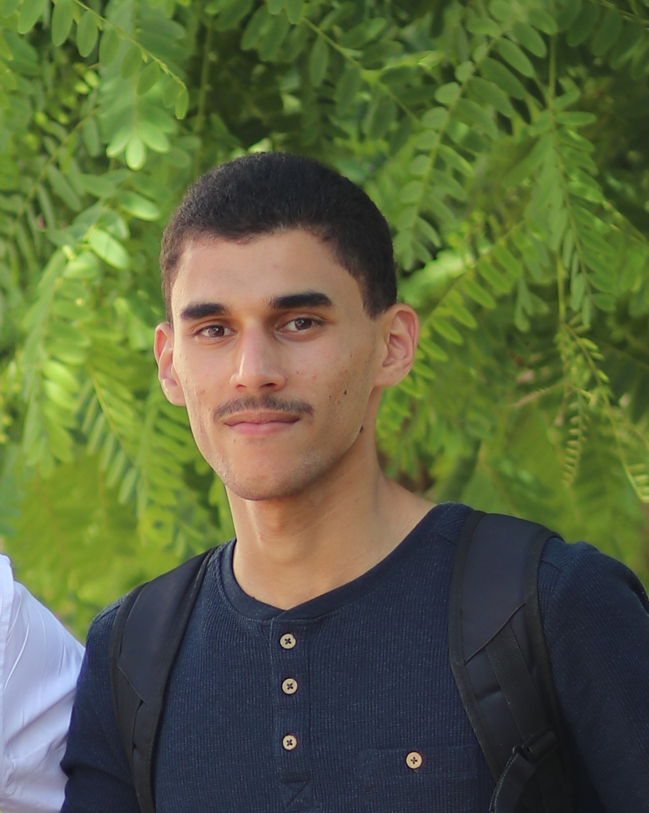
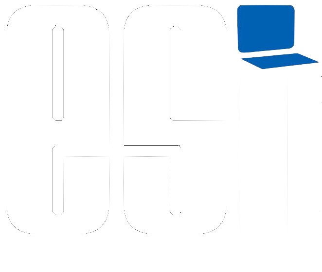
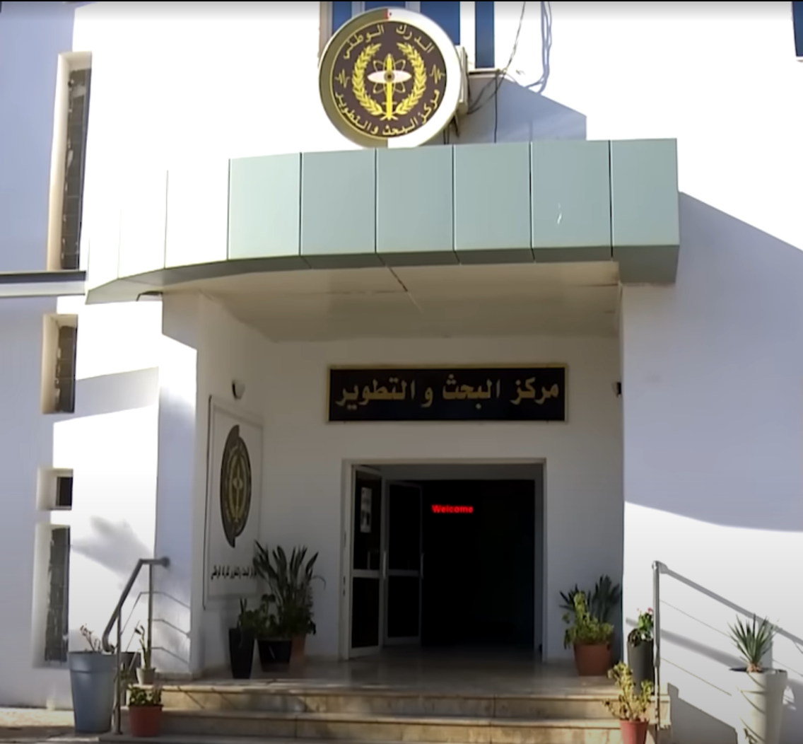
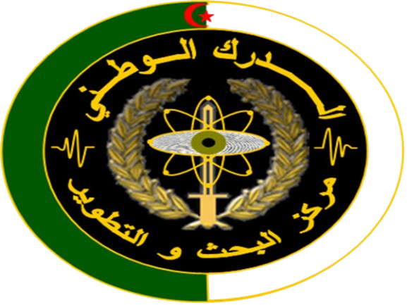
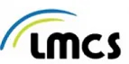
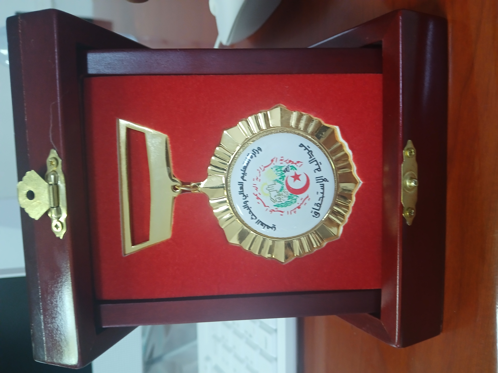
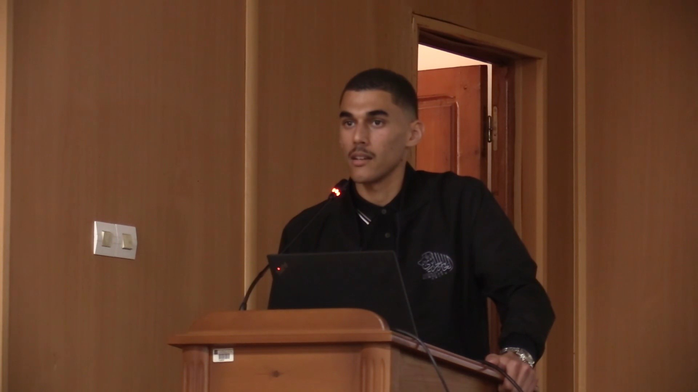
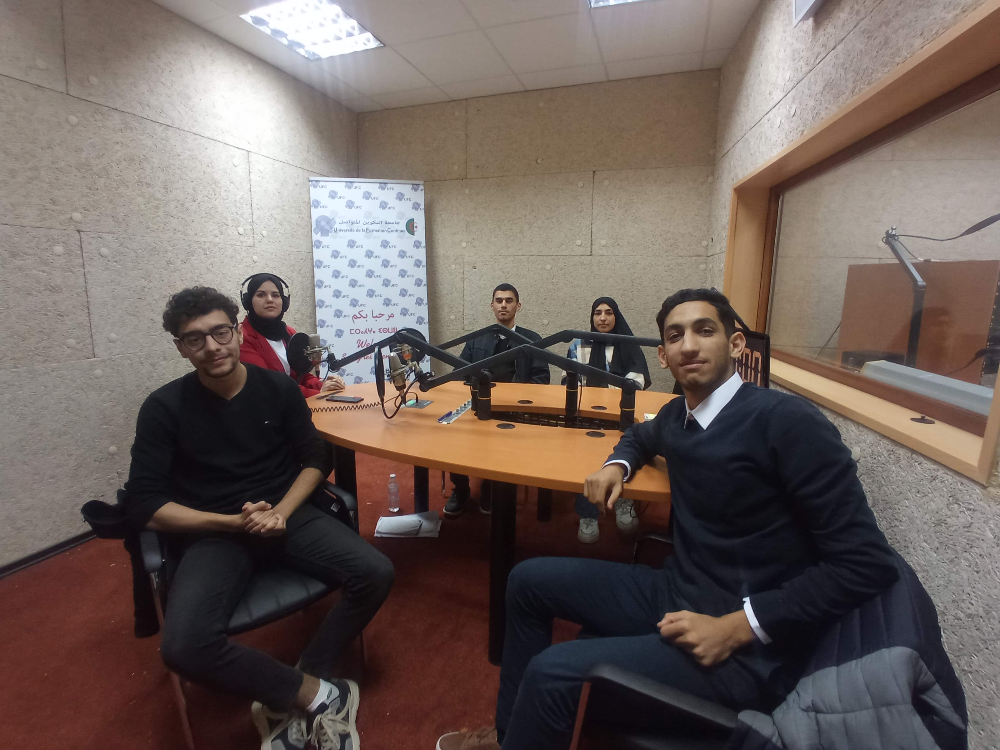
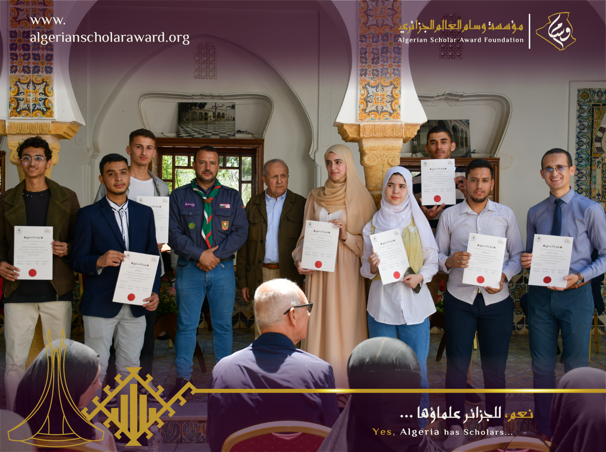

LanguagesLangages
JavaScriptTypeScriptPythonJavaKotlinDartCC++
Computer Science Engineer — Information Systems Ingénieur en Informatique — Systèmes d'Information
Newly graduated engineer specialized in Information Systems, Audit, Governance, Enterprise Architecture, risk management, and IS change management. I bring hands-on experience configuring ERP/CRM solutions and leading multidisciplinary teams, alongside foundational knowledge in biometric systems and MRTD documents. I turn complex compliance requirements — ISO, GDPR/RGPD, Law 18-07, ICAO Doc 9303 — into functional, secure systems that actually run.
Jeune ingénieur diplômé, spécialisé en Systèmes d'Information, Audit, Gouvernance, Architecture d'Entreprise, gestion des risques et conduite du changement SI. Je dispose d'une expérience concrète en configuration de solutions ERP/CRM et en pilotage d'équipes pluridisciplinaires, ainsi que de bases solides en systèmes biométriques et documents MRTD. Je transforme des exigences de conformité complexes — ISO, RGPD, Loi 18-07, Doc 9303 OACI — en systèmes fonctionnels et sécurisés, réellement opérationnels.

Newly graduated Computer Science Engineer, specialized in Information Systems and Technologies. My hands-on experience spans IS audit, quality management, enterprise architecture, ERP/CRM integration, information security, and change management. I am eager to bring these capabilities to companies or consulting and audit firms to drive concrete projects in governance, compliance, and systemic improvement. Rigorous and experienced in leading multidisciplinary teams, I bridge the gap between strategic business needs and technical execution. My ultimate goal is to combine technical expertise with meaningful operational impact, ensuring that IT systems are not only secure and compliant but also catalysts for organizational growth.
Nouveau diplômé Ingénieur d'État en Informatique, spécialisé en Systèmes et Technologies de l'Information. Mon expérience pratique couvre l'audit SI, le management de la qualité, l'architecture d'entreprise, l'intégration ERP/CRM, la sécurité de l'information et la conduite du changement. Je suis impatient d'apporter ces compétences à des entreprises ou des cabinets de conseil et d'audit afin de piloter des projets concrets en matière de gouvernance, de conformité et d'amélioration systémique. Rigoureux et expérimenté dans le pilotage d'équipes pluridisciplinaires, je fais le lien entre les besoins métiers stratégiques et l'exécution technique. Mon objectif ultime est d'allier expertise technique et impact opérationnel significatif, en veillant à ce que les systèmes IT soient non seulement sécurisés et conformes, mais aussi de véritables leviers de croissance pour l'organisation.
Capabilities organized the way an audit working paper would group them — by domain of control.
Compétences organisées à la manière d'un document de travail d'audit — par domaine de contrôle.

National Higher School of Computer Science (ESI Algiers)
École Nationale Supérieure d'Informatique (ESI Alger)
Specialization — Information Systems and Technologies
Spécialisation — Systèmes et Technologies de l'Information

Data Analysis, Advanced Databases, Business Intelligence, Decision Support Information Systems
Information Systems Architecture, Information Systems Security Engineering & Management
Change Management, Quality Assurance, Information Systems Audit, Enterprise Architecture (Urbanization)
CRM, ERP
Analyse de Données, Bases de Données Avancées, Business Intelligence, Systèmes d'Information Décisionnels
Architecture des Systèmes d'Information, Ingénierie & Management de la Sécurité des SI
Conduite du Changement, Assurance Qualité, Audit des SI, Architecture d'Entreprise (Urbanisation)
CRM, ERP


National Gendarmerie Research and Development Center (CRD-GN) — Final Year Project
Centre de Recherche et Développement de la Gendarmerie Nationale (CRD-GN) — Projet de Fin d'Études


ESI — Employability Study
ESI — Étude d'Employabilité

LMCS Laboratory, ESI — Gamification Internship
Laboratoire LMCS, ESI — Stage en Gamification

Freelance — Smart Order Management SaaS
Freelance — SaaS de Gestion Intelligente des Commandes

ESI — Official Baccalaureate Orientation National Center
ESI — Centre National Officiel d'Orientation des Bacheliers
Academic and team-led builds, from mobile apps to audit engagements.
Projets académiques et missions d'équipe, des applications mobiles aux missions d'audit.
Team Leader & Mobile Developer — ESI
Chef d'Équipe & Développeur Mobile — ESI
Led a multidisciplinary team over three months to design and build a carpooling app with Flutter and Firebase, coordinating task planning and technical decisions.
Direction d'une équipe multidisciplinaire pendant trois mois pour concevoir et développer une application de covoiturage avec Flutter et Firebase, en coordonnant la planification des tâches et les décisions techniques.
Team Leader & Negotiator — Secondary School
Chef d'Équipe & Négociateur — Lycée
Organized a workshop introducing computer science and algorithms to high school students, negotiating with the school administration and preparing all educational content.
Organisation d'un atelier d'initiation à l'informatique et aux algorithmes pour des lycéens, négociation avec l'administration de l'école et préparation du contenu pédagogique.
Team Leader & Mobile Developer — ESI
Chef d'Équipe & Développeur Mobile — ESI
Led a team to design a food delivery app with ordering, real-time tracking, and delivery management, built with Jetpack Compose, JavaScript, and MongoDB.
Direction d'une équipe pour la conception d'une application de livraison avec gestion des commandes, suivi en temps réel et gestion des livraisons (Jetpack Compose, JavaScript, MongoDB).
Team Leader & Auditor — ESI (RNAQES)
Chef d'Équipe & Auditeur — ESI (RNAQES)
Led a four-month audit applying the RNAQES framework, assessing ESI's socio-economic environment against quality criteria and presenting findings to institutional stakeholders.
Direction d'un audit de quatre mois appliquant le référentiel RNAQES, évaluant l'environnement socio-économique de l'ESI et présentant les conclusions aux parties prenantes institutionnelles.
Team Leader, Systems Designer & Integrator — ESI
Chef d'Équipe, Concepteur SI & Intégrateur — ESI
Designed a CRM tailored to institutional needs and implemented Odoo's built-in CRM module, leading the project from design through deployment.
Conception d'un CRM adapté aux besoins institutionnels et implémentation du module CRM natif d'Odoo, pilotage du projet de la conception au déploiement.
Team Leader, Systems Designer & Full-Stack Developer
Chef d'Équipe, Concepteur SI & Dév Full-Stack
Led the design of a system processing field reports and monitoring drilling operations, with interactive dashboards built end-to-end on Next.js, Django, and Oracle.
Direction de la conception d'un système traitant les rapports de terrain et surveillant les opérations de forage, avec des tableaux de bord interactifs (Next.js, Django, Oracle).
Team Leader, Systems Designer, Auditor & Developer
Chef d'Équipe, Concepteur, Auditeur & Développeur
Audited an existing information system, designed a digital tool for ESI's IT maintenance service, and led change management to address stakeholder resistance.
Audit d'un système existant, conception d'un outil numérique pour le service de maintenance informatique de l'ESI, et gestion du changement face à la résistance des utilisateurs.
Research Intern — LMCS Laboratory, ESI
Stagiaire de Recherche — Laboratoire LMCS, ESI
Built a Godot-based gamification tool making algorithmic concepts more accessible, validated through live demos and feeding into doctoral thesis research.
Développement d'un outil basé sur Godot rendant les concepts algorithmiques plus accessibles, validé par des démonstrations et intégré à une recherche doctorale.

ESI & CRD-GN — Information Day on R&D in Public Security
ESI & CRD-GN — Journée d'information sur la R&D dans la Sécurité Publique
Delivered a presentation titled “Automated Road Traffic Offence Processing System,” covering design objectives, technical approach, and compliance framework, followed by an R&D workshop in public security.
Présentation intitulée « Système de Traitement Automatisé des Infractions au Code de la Route », couvrant les objectifs de conception, l'approche technique et le cadre de conformité, suivie d'un atelier R&D.

Sport & Entertainment Club (SEC), ESI
Club Sportif et Culturel (SEC), ESI
Served as HR & Internal Relations Manager, overseeing the organization of 5+ major events. Managed member coordination, administrative procedures, and participant logistics. Beyond HR duties, actively drove external relations by sourcing and negotiating with sponsors and institutional partners to secure event funding.
Gestion RH et supervision de l'organisation de plus de 5 événements majeurs. Coordination des membres, procédures administratives et logistique. Également responsable de la recherche et de la négociation de partenariats et financements avec les sponsors.


Algerian Scholar Award
Active member for over three years, contributing to 5+ major events dedicated to celebrating Algerian scholars. Roles included event organization, VIP guest relations, and recently, coordinating the IT solution for guest management.
Membre actif pendant plus de trois ans, contribuant à plus de 5 événements majeurs célébrant les universitaires algériens. Rôles : organisation, relations VIP et, plus récemment, coordination de la solution informatique de gestion des invités.


Ouikaya
Certified in First Aid covering emergency intervention procedures, providing on-site emergency support and first aid assistance during organized public events.
Certification en secourisme couvrant les procédures d'intervention d'urgence, fourniture d'un soutien d'urgence sur site et d'une assistance aux premiers secours lors d'événements publics.

ESI — 55th Anniversary Celebrations
ESI — Célébrations du 55ème Anniversaire
Contributed to proposing and organizing a year-long program of anniversary events, coordinating with sponsors and partners, and liaising with guests across hierarchical levels.
Contribution à la proposition et à l'organisation d'un programme d'événements sur un an, coordination avec les sponsors et partenaires, et liaison avec les invités à tous les niveaux hiérarchiques.


LMCS (ESI) & EPH Ain Taya — IMAIH 2025 ↗
LMCS (ESI) & EPH Ain Taya — IMAIH 2025 ↗
Organizing committee member for the 1st Colloquium on the Impact of Artificial Intelligence in Medicine held at the National Library of Algeria. Managed guest reception, attendee flow, and on-site orientation.
Membre du comité d'organisation du 1er Colloque sur l'impact de l'Intelligence Artificielle en Médecine (IMAIH) à la Bibliothèque Nationale (Hamma, Alger). En charge de l'accueil, de la gestion des flux de participants et de l'orientation sur place.

English certified by iCIMS Language Assessment (Technical & Professional English), April 2026.
Anglais certifié par iCIMS Language Assessment (Anglais Technique & Professionnel), Avril 2026.

Official endorsements, academic letters, and institutional recognitions received.
Lettres de recommandation officielles, appréciations académiques et distinctions reçues.
Pr. Koudil Mouloud — Director of ESI
Official recommendation highlighting exceptional commitment to the school community, outstanding organizational skills, professionalism and leadership.
Recommandation officielle soulignant un engagement exceptionnel envers la communauté de l'école, des compétences organisationnelles remarquables, un professionnalisme et un leadership.

Download my complete resume to review my detailed academic background, professional experience, and technical skills.
Téléchargez mon CV complet pour consulter en détail mon parcours académique, mon expérience professionnelle et mes compétences techniques.
Download CV (PDF) Télécharger le CV (PDF)